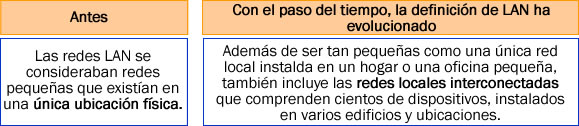
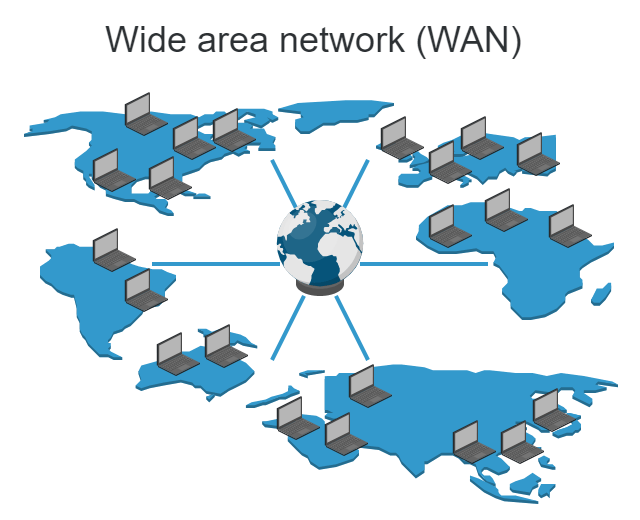
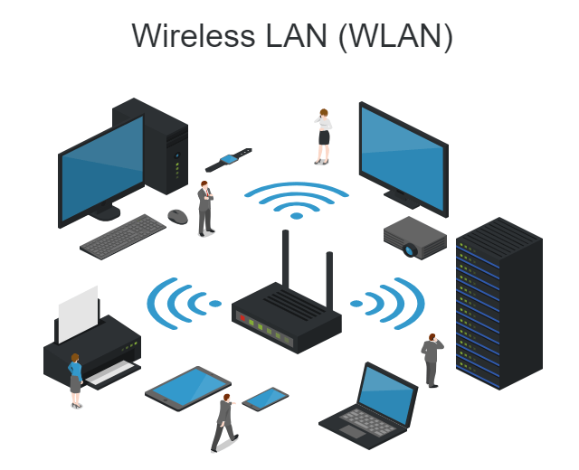

Redes LAN, WAN y WLAN
Según el área cubierta, una red podrá considerarse como:
(Revisar información de cada recuadro. Para desplegar la información de un tema, seleccionar el recuadro correspondiente.)
Una red de área local (LAN) se refiere a un grupo de dispositivos interconectados que se encuentran bajo el mismo control administrativo, que administra las políticas de seguridad y control de acceso que se aplican a la red.

Dentro de este contexto, la palabra "local" en el término "red de área local" se refiere al control sistemático local y no significa que los dispositivos se encuentran físicamente cerca uno del otro.
Los dispositivos que se encuentran en una LAN pueden estar cerca físicamente, pero esto no es obligatorio.

Las redes de área extensa (WAN) constituyen redes que conectan redes LAN en ubicaciones que se encuentran geográficamente separadas.
Internet es el ejemplo más común de una WAN.

Internet es una red WAN grande que se compone de millones de redes LAN interconectadas.
Se utilizan proveedores de servicios de telecomunicaciones (TSP) para interconectar estas redes LAN en ubicaciones diferentes.
En una red LAN tradicional, los dispositivos se conectan entre sí mediante cables de cobre. En algunos entornos, es posible que la instalación de cables de cobre resulte poco práctica, no deseable o incluso imposible. En estos casos, se utilizan dispositivos inalámbricos para transmitir y recibir datos mediante ondas de radio. Estas redes se denominan redes LAN inalámbricas o WLAN. Al igual que en las redes LAN, en una WLAN es posible compartir recursos, como archivos e impresoras, y acceder a Internet.

Consideraciones importantes:
- En una WLAN, los dispositivos inalámbricos se conectan a puntos de acceso dentro de un área determinada.
- Por lo general, los puntos de acceso se conectan a la red mediante un cableado de cobre.
- En lugar de proporcionar cableado de cobre a todos los hosts de red, sólo el punto de acceso inalámbrico se conecta a la red con cables de cobre.
- La cobertura de WLAN puede ser pequeña y estar limitada al área de una sala, o puede contar con un alcance mayor.